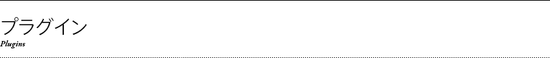

SimpleLibとはjQueryを利用した様々なプラグインを動的にロードして、ウェブサイトを構築する上でよく使う機能を一元管理しするためのツールです。
各プラグインを別ファイルにし、必要なファイルだけをロードします。
現在、以下のようなプラグインがあります。
| accordion | シンプルなアコーディオンナビゲーション |
|---|---|
| fixHeight | 要素の高さを揃える |
| ie6PngFix | Internet Explorer 6でも透過PNGを使えるようにする |
| ie6PositionFixed | Internet Explorer 6でもCSSの position:fixed を使えるようにする |
| imgSwap | a要素をクリックして、既存のimg要素の画像を切り替える |
| lightBox | jQuery lightBoxプラグインを読み込む |
| overlayOthers | 指定した要素の子のa要素にロールオーバーすると他のa要素にcssで背景色や背景画像を指定できる半透明の要素をかぶせる |
| rollOver | マウスオーバー／マウスアウトで画像を切り替える |
| scroll | スムーススクロール |
| showIfScroll | 指定した要素をスクロールバーが表示されるとき（ドキュメントの高さがウィンドウの高さを超えるとき）だけ表示する |
| tab | シンプルなタブナビゲーション |
| textHint | 未入力で非選択時のテキストボックスにヒントを表示する |
| toolTip | シンプルなツールチップ |
| trimmedScroll | img要素を含むa要素にロールオーバーすると別の画像をそのimg要素のサイズにトリミングしてスクロールしながら表示する |
scriptタグでjQueryを読み込んだ後に、simplelib.jsを読み込みます。その際、src属性にsimplelib.jsのパス指定のあとに「?」（半角クエスチョンマーク）をつけて、読み込むプラグインを「,」（半角カンマ）区切りで指定します。
例
<script type="text/javascript" src="js/jquery-1.3.2.js"></script> <script type="text/javascript" src="js/simplelib.js?rollOver,scroll,ie6PngFix"></script>
※プラグインのスペル間違いやpluginsフォルダにプラグインファイルが存在しない場合などはコンソールにエラーメッセージが出力されます。 コンソールはSafariの開発メニューやFirefoxのプラグインFirebugなどを利用すると確認できます。
SimpleLibでは各プラグインのオプション設定を一元管理して設定することができます。
設定をカスタマイズするにはsimplelib.jsを読み込む前にJavaScriptで「SimpleLibSettings」というオブジェクトを定義して、オプション設定を記述します。
プラグインごとのオプション設定は各プラグインの使い方で説明します。
例
<script type="text/javascript" src="js/jquery-1.4.1.js"></script>
<script type="text/javascript">
var SimpleLibSettings = {
//rollOverプラグインを発動させるセレクタを変更
rollOver: { selector:".hover" },
//imgSwapプラグインをクリックではなく、マウスオーバーで発動させるように変更
imgSwap: { trigger:"mouseover" }
};
</script>
<script type="text/javascript" src="js/simplelib.js?rollOver,imgSwap"></script>

accordion - シンプルなアコーディオン
HTMLの記述だけで実現できるシンプルなアコーディオンナビです。入れ子もできます。
基本的な使い方
- アコーディオン全体を包括する親要素に「accordion」というクラスを付与してください。
- 開閉させるためのボタンとして機能するa要素に「handle」というクラスを付与してください。
- 「handle」というクラスを付与したa要素のhref属性に開閉させる対象の要素のidを「#id名」のように指定してください。
その他の設定
-
あらかじめ開いた状態にしておきたいa要素に「selected」というクラスをつけておくと、その対象の要素が開いた状態になります。
- 選択されている状態のa要素には「selected」というクラスが付与されるので、CSSで見た目の設定ができます。
オプション設定
| オプション | デフォルト | 設定内容 |
|---|---|---|
| selector | .accordion | アコーディオンをグループ化するための親要素のセレクタ |
| handleSelector | .handle | 開閉させるためのボタンとして機能するa要素のセレクタ |
| selectedClass | selected | 選択状態の要素に付与するクラス |
| time | 300 | 開閉するアニメーションの時間（ミリ秒） |
サンプル
サンプルコード
<div class="accordion"> <dl> <dt><a href="#Panel01" class="handle selected">ハンドル１</a></dt> <dd id="Panel01"> <p> パネル１。これはダミーテキストです。これはダミーテキストです。 これはダミーテキストです。これはダミーテキストです。 これはダミーテキストです。 </p> </dd> <dt><a href="#Panel02" class="handle">ハンドル２</a></dt> <dd id="Panel02"> <p> パネル２。ハンドル２にはあらかじめ「selected」というクラスが付与されています。 これはダミーテキストです。これはダミーテキストです。これはダミーテキストです。 これはダミーテキストです。これはダミーテキストです。 </p> </dd> <dt><a href="#Panel03" class="handle">ハンドル３</a></dt> <dd id="Panel03"> <p> パネル３。これはダミーテキストです。これはダミーテキストです。 これはダミーテキストです。これはダミーテキストです。 これはダミーテキストです。 </p> </dd> </dl> </div> </pre>
ie6PngFix
jQuery.ifixpngというプラグインを読み込んで、Internet Explorer 6でも透過PNGを利用できるようにします。
基本的な使い方
- 透過させたいimg要素に「pngfix」というクラスを付与してください。
オプション設定
| オプション | デフォルト | 設定内容 |
|---|---|---|
| selector | .pngfix | プラグインを発動させる要素のセレクタ |
サンプル

サンプルコード
<div style="background-image:url(examples/images/ie6pngfix-bg.gif); padding:90px 80px 60px 80px;"> <img src="examples/images/ie6pngfix-img.png" alt="PNG" width="600" height="100" class="pngfix" /> </div>
ie6PositionFixed
jQuery.exFixedというプラグインを利用して、Internet Explorer 6でもCSSのposition:fixedを利用できるようにします。
基本的な使い方
- position:fixedを指定する要素に「exfixed」というクラスを付与してください。
オプション設定
| オプション | デフォルト | 設定内容 |
|---|---|---|
| selector | .exfixed, .exFixed | プラグインを発動させる要素のセレクタ |
サンプル
サンプルコード
<div style="position:fixed; bottom:0px; left:50%;" class="exfixed"> <a href="#" class="scroll rollover"><img src="examples/images/pagetop.gif" alt="このページの先頭へ" width="40" height="40" /></a> </div>
imgSwap
a要素をクリックして、既存のimg要素の画像を切り替えます。
基本的な使い方
- a要素に「imgSwap」というクラスを付与します。
- a要素のhref属性に表示したい画像のURLの後に「#」と画像を切り替えたいimg要素のidを指定します。
オプション設定
| オプション | デフォルト | 設定内容 |
|---|---|---|
| selector | .imgswap, .imgSwap | プラグインを発動させる要素のセレクタ |
| trigger | click | 画像の切り替えを実行するイベント（mouseoverを指定するとロールオーバーで切り替わる） |
| attribute | href | 画像のURLを指定する属性 |
| othersClass | others | あるa要素にロールオーバーした時にその他のa要素に付与されるクラス |
| scrolling | false | trueを指定すると画像を切り替えるときに対象のimg要素が画面内に収まっていない場合、img要素の位置までスクロールする |
| scrollingTime | 400 | scrollingオプションがtrueのとき、目的位置までスクロールする時間（ミリ秒） |
サンプル
サンプルコード：HTML
<ul class="clearfix"> <li><a href="examples/images/sanei-pict01.jpg#MainImg" class="imgSwap"><img src="examples/images/sanei-pict01m.jpg" alt="" width="40" height="40" /></a></li> <li><a href="examples/images/sanei-pict02.jpg#MainImg" class="imgSwap"><img src="examples/images/sanei-pict02m.jpg" alt="" width="40" height="40" /></a></li> <li><a href="examples/images/sanei-pict03.jpg#MainImg" class="imgSwap"><img src="examples/images/sanei-pict03m.jpg" alt="" width="40" height="40" /></a></li> <li><a href="examples/images/sanei-pict04.jpg#MainImg" class="imgSwap"><img src="examples/images/sanei-pict04m.jpg" alt="" width="40" height="40" /></a></li> <li><a href="examples/images/sanei-pict05.jpg#MainImg" class="imgSwap"><img src="examples/images/sanei-pict05m.jpg" alt="" width="40" height="40" /></a></li> </ul> <div> <img src="examples/images/sanei-pict01.jpg" alt="" id="MainImg" width="600" height="992" /> </div>
lightBox
jQuery lightBoxプラグインを読み込みます。
基本的な使い方
- a要素に「lightBox」というクラスを付与します。
オプション設定
| オプション | デフォルト | 設定内容 |
|---|---|---|
| selector | .lightBox | プラグインを発動させる要素のセレクタ |
| その他 | jQuery lightBoxのオプションを利用できます。 | |
サンプル
サンプルコード：HTML
<a href="examples/images/sanei-pict01.jpg" class="lightBox"><img src="examples/images/sanei-pict01m.jpg" alt="" width="40" height="40" /></a>
overlayOthers
指定した要素の子孫のa要素にロールオーバーすると、他のa要素にcssで背景色や背景画像を指定できる半透明の要素がかぶさります。
基本的な使い方
- 複数のa要素を子孫に持つ要素に「overlayOthers」というクラスを付与します。
- CSSで「overlay」というクラスを持つ要素の背景を指定します。
オプション設定
| オプション | デフォルト | 設定内容 |
|---|---|---|
| selector | .overlayOthers | プラグインを発動させる要素のセレクタ |
| opacity | 0.8 | かぶさる要素の不透明度 |
| exceptionSelector | .overlayException | 対象から除外するa要素につけるクラス |
| othersClass | others | あるa要素にロールオーバーした時にその他のa要素に付与されるクラス |
| overClass | over | ロールオーバーしたa要素に付与されるクラス |
| time | 400 | ロールオーバーしたときに指定された不透明度までフェードする時間（ミリ秒） |
| afterTime | 0 | 0以外を指定すると指定された不透明度までフェードした後にさらにここで指定した時間をかけて完全に不透明になる |
サンプル
サンプルコード：HTML
<ul class="overlayOthers"> <li><a href="#"><img src="examples/images/sanei-pict01m.jpg" alt="" width="40" height="40" /></a></li> <li><a href="#"><img src="examples/images/sanei-pict02m.jpg" alt="" width="40" height="40" /></a></li> <li><a href="#"><img src="examples/images/sanei-pict03m.jpg" alt="" width="40" height="40" /></a></li> <li><a href="#"><img src="examples/images/sanei-pict04m.jpg" alt="" width="40" height="40" /></a></li> <li><a href="#"><img src="examples/images/sanei-pict05m.jpg" alt="" width="40" height="40" /></a></li> </ul>
サンプルコード：CSS
.overlay { background-color:#ffffff; }
rollOver
マウスオーバーで画像を切り替えます。
基本的な使い方
- 切り替えたい画像を含むa要素の「rollOver」というクラスを付与し、元の画像ファイル名に「-over」を付けたマウスオーバー用の画像を用意しておきます。
オプション設定
| オプション | デフォルト | 設定内容 |
|---|---|---|
| selector | .rollover, .rollOver | プラグインを発動させる要素のセレクタ |
サンプル
サンプルコード
<a href="#" class="scroll rollover"><img src="examples/images/pagetop.gif" alt="このページの先頭へ" width="40" height="40" /></a>
scroll
指定した要素の位置までアニメーションしながらスクロールします。
基本的な使い方
- a要素のhref属性にスクロールする先の要素のidを「#id名」のように指定し、「scroll」というクラスを付与します。
- ページの先頭までスクロールする場合はhref属性を「#」にします。
オプション設定
| オプション | デフォルト | 設定内容 |
|---|---|---|
| selector | .scroll | スムーススクロールを発動させる要素のセレクタ |
| time | 600 | スクロールする時間（ミリ秒） |
サンプル
サンプルコード
<div> <ul> <li><a href="#usage01" class="scroll">使い方1</a></li> <li><a href="#usage02" class="scroll">使い方2</a></li> <li><a href="#" class="scroll">ページの先頭へ</a></li> </ul> </div>
textHint
未入力で非選択時のテキストボックスおよびテキストエリアにヒントを表示します。
基本的な使い方
- テキストボックスやテキストエリアに、「hint」というクラスを付与します。
- その要素のtitle属性にヒントのテキストを設定します。
-
非選択時には「blur」というクラスが付与されるのでCSSでスタイルを設定します。
オプション設定
| オプション | デフォルト | 設定内容 |
|---|---|---|
| selector | input.hint, textarea.hint | プラグインを発動させる要素のセレクタ |
| attribute | title | ヒントを設定する属性 |
| blurClass | blur | 非選択時に付与されるクラス |
サンプル
サンプルコード：HTML
<form> <input type="text" class="hint" size="30" value="" title="キーワードを入力してください" /> <input type="submit" value="検索" /> </form>
サンプルコード：CSS
input.blur, textarea.blur { color:#cccccc; }
trimmedScroll
img要素を含むa要素にロールオーバーすると別の画像を元のimg要素のサイズにトリミングしてスクロールしながら表示します。
基本的な使い方
- img要素を含むa要素に「trimmedScroll」というクラスを付与します。
- 元の画像と同じ幅で高さが大きい画像を用意して、元の画像のファイル名の後に「-scroll」を付けた名前で同じディレクトリにアップします。
オプション設定
| オプション | デフォルト | 設定内容 |
|---|---|---|
| selector | .trimmedScroll | プラグインを発動させる要素のセレクタ |
| scrollTimePerPixcel | 20 | 1ピクセル当たりのスクロール時間（ミリ秒） |
| fadeTime | 1000 | 元の画像をフェードアウトさせる時間（ミリ秒） |
| scrollImgClass | scroll | スクロールさせる画像に付与するクラス |
サンプル

サンプルコード：HTML
<a href="#" class="trimmedScroll"><img src="examples/images/tonan01-thumbnail.jpg" alt="" width="300" height="60" /></a>

{kind=link}
{kind=link}
ライセンスはMITライセンスです。プラグインで取り込んでいる外部のライブラリについてはそれぞれのライセンスをご確認ください。
準備中
準備中
Copyright 2010 STARRYWORKS inc. All rights reserved.